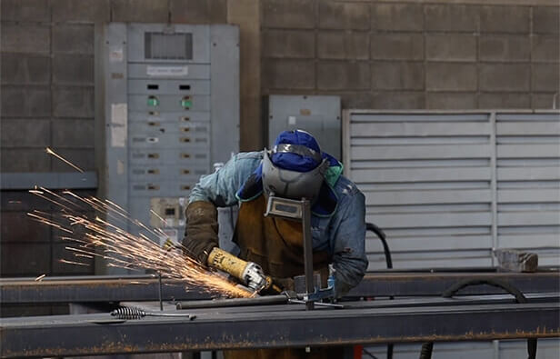
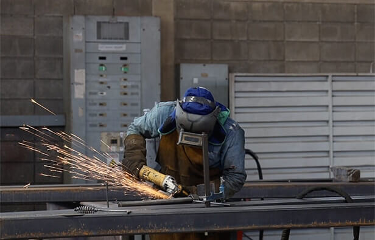
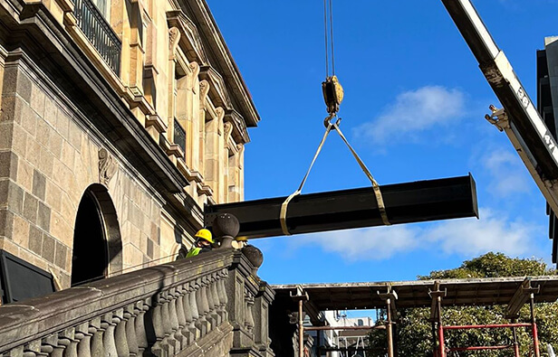
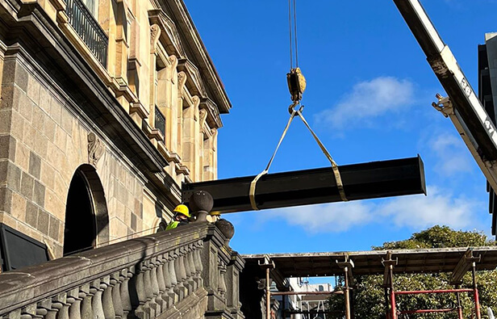

- TRAMOYA
- FAQ
Se abre el telón...
Vemos una maravillosa puesta escena, en ella artistas que han ensayado por meses para hacernos reír, llorar y robarse merecidamente nuestros aplausos.
Se cierra el telón.
...
Y no se vuelve a abrir.
¿Cómo se llama la obra?
De todos los chistes de "se abre y se cierra el telón" la Tramoya no es uno de ellos.
La tramoya es el corazón del Teatro Nacional. Su conservación es vital para preservar y construir nuestro patrimonio cultural.
Le damos la bienvenida a este espacio dedicado al Proyecto de Conservación de La Tramoya del Teatro Nacional.
Posiblemente, el proyecto de preservación cultural más importante de nuestra generación.
Conservación de la Tramoya del Teatro Nacional de Costa Rica
Que siempre se abra el telón
Tal vez, la palabra más importante de este proyecto es:
Conservación.
Es crucial recalcar que el proyecto de La Tramoya, bajo ninguna circunstancia, busca cambiar o eliminar La Tramoya actual.
Todo lo contrario, el objetivo principal del proyecto es construir una estructura de acero complementaria, que libere de peso y tensión a La Tramoya actual.
Permitiéndole así, seguir funcionando como lo ha hecho desde su instalación; y además soportar lo último en tecnología para espectáculos, para que ésta sea compatible con el diseño original de La Tramoya.
Etapas del proceso
 


Construcción de bases y cimientos. Breve explicación sobre esta etapa?
 



Construcción de nueva estructura de acero. Breve explicación sobre esta etapa?

Aprobación final y presentación al público. Breve explicación sobre esta etapa?
Fondos del proyecto
Invertir en la conservación de la Tramoya es asegurar la continuidad del Teatro Nacional.
La conservación de nuestra Tramoya requiere de una inversión importante, la cual se ha financiado en su totalidad con fondos propios del Teatro Nacional de Costa Rica.
Estos fondos provienen del remanente del superávit específico correspondiente a la recaudación del impuesto de espectáculos públicos.